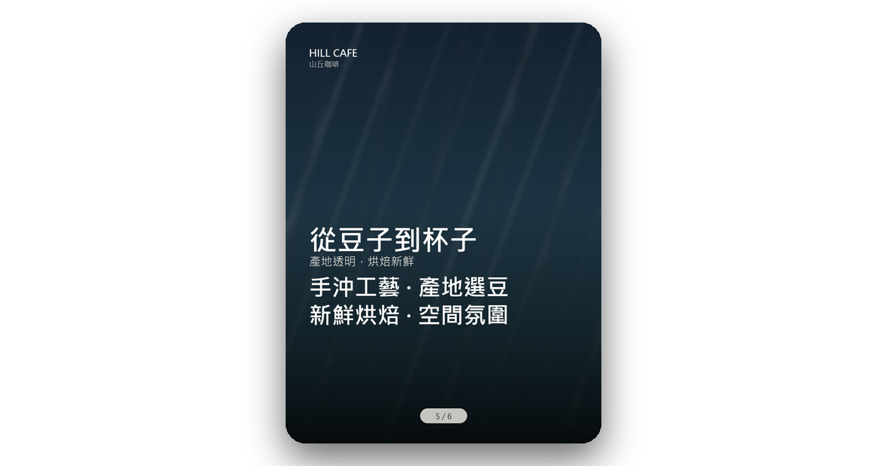

收到的人可以在 LINE 裡左右滑動看你的服務、作品、聯絡方式，覺得不錯就一鍵轉給別人——你的名片自己跑業務。

不用申請 LIFF、不用碰 LINE 開發者後台——分享功能已經用共用服務接好了。
6 張可滑動的 LINE 原生卡片 ＋ 一頁式品牌網頁，專人建置到好。一次建置費，沒有月費。
加上點擊追蹤與業務員看板——知道誰點過、點了什麼、回來看過幾次。年費含一年內的修改與協助。
名單管理、標籤分類、未回覆提醒與自動跟進訊息——不漏掉該跟的人。
可為你的客戶製作多張名片，掛自家品牌另議。
不用你會寫程式。你只要把資料和照片給我，卡片、網站、分享流程我做好、上線、測過再交給你。
L1 不用，只有一次建置費。L2 每年 NT$1,200（追蹤服務與看板維護）。L3 每月 NT$399（CRM 需要持續維運：提醒排程、訊息推播、資料備份）。
都不用。分享功能已經接好共用的服務，你不用碰 LINE 開發者後台。
不會。卡片會帶著指向你自己網站上的資料去分享，共用服務只是把它讀回來幫你送出。每個人分享出去的都還是自己的名片。
配色可以改（3 個色碼換整體色調）。版型固定（6 張卡的結構一樣），可換的是內容、圖片、配色；要不同排版屬於客製範圍。
可以，請選商業／白標授權，可為你的客戶製作多張名片。
資料齊全後約 3～5 個工作天。L2／L3 因為要接追蹤與看板，會再多 1～2 天。
用的是 LINE 官方公開功能，若官方調整我會盡快更新。